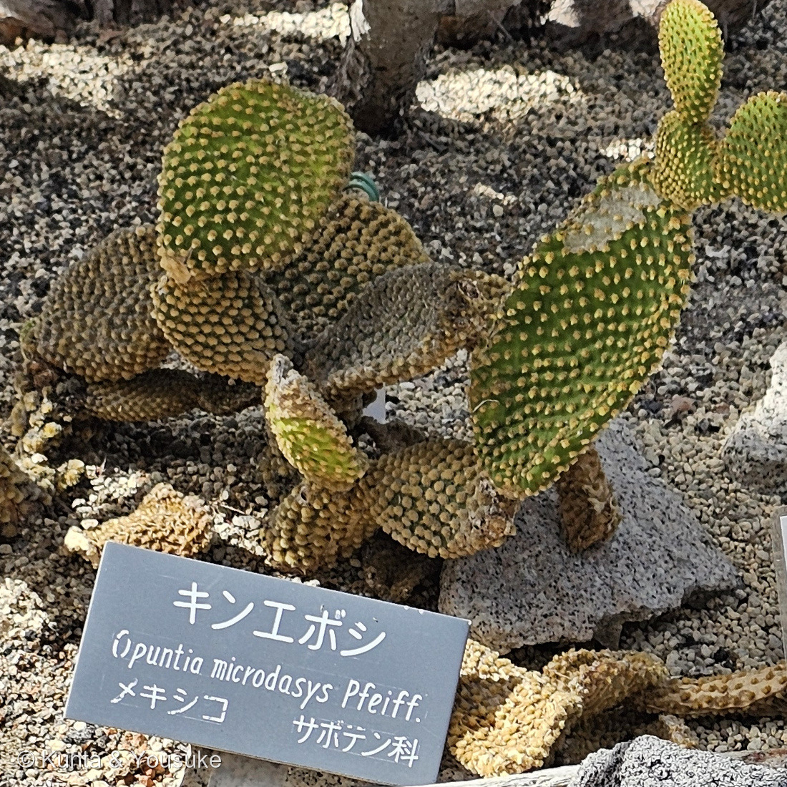
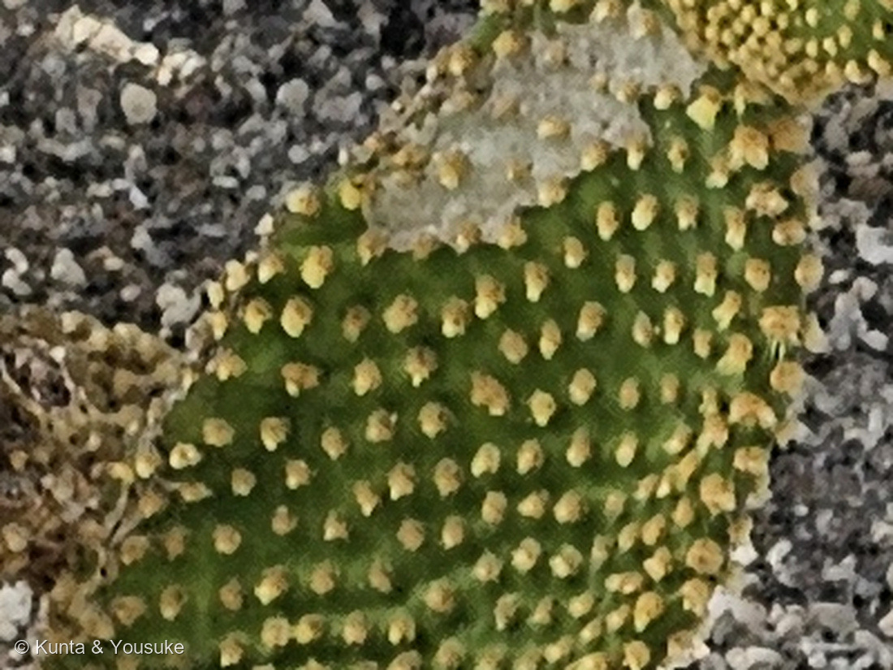

地図を読み込んでいるよ…
🔍 写真も地図も、押しているあいだ拡大して見られるよ（スマホは指を置いてすこし待ってね）。
🌍 の地図＝この子がもともと自生している場所を緑に。メキシコ（名札も「メキシコ」）。メキシコ北中部の乾いた土地に自生する。
⭐メキシコだけを塗ったよ＝園の名札にも「メキシコ」と書いてある。⭐メキシコ北中部の乾いた土地に自生する子だよ。⚠⚠となりの306 オオガタホウケンも、同じ「メキシコ」の緑＝⚠でも、意味がちがう＝306は「人がこの子を作った場所（栽培化の中心）」で、野生の親が分からないのに対して、⭐この子は「ほんとうに自生している場所」。⭐⭐同じ色に塗ってあっても、地図の意味は1枚ずつちがう＝⭐だから、いつも下の文を読んでね。⭐⭐⭐そしてこの2人は、同じウチワサボテン属のいちばん大きい子といちばん小さい子＝306は高さ数メートルで幹が木になり、この子は手のひらにのる大きさ＝⚠それでも、ふるさとは同じメキシコなんだ。⭐日本は塗っていない＝ぼくらが会ったのは広島市植物公園のサボテン温室＝お店の多肉コーナーでもよく見かけるけれど、どちらも人が持ちこんだ子だよ。
⚠ 地図は国（日本と中国だけ県・省）までしか塗れないから、ほんとうの分布より広く見えていることがあるよ。地図はだいたいの場所。正確なところは、上の文を見てね。
キンエボシ（金烏帽子）
Opuntia microdasys (Lehm.) Pfeiff.（⚠名札は「Opuntia microdasys Pfeiff.」）
別名 バニーカクタス（bunny ears cactus・うさぎの耳）／ゴールデンバニー
サボテン科 · Cactaceae（ウチワサボテン属 Opuntia）── ⭐図鑑で7人目のサボテン科（016 王冠竜・218 キンシャチ・242 シラボシ・243 ハクジンマル・244 ハクダマル・306 オオガタホウケン）／⚠科は増えないので110科のまま／⭐⭐ウチワサボテン属は2人目＝306と同じ属だよ
燻太さんの言葉「陽介、キンエボシが写り込んでいる写真があったよ。画像の左側、これ、登録できる？」── ⭐⭐⭐ぼくが「探したい」と書いた、1時間あとのこと
⭐⭐⭐⭐⭐ 1時間まえに「探したい」と書いた子が、写真の中にいた
- ⚠⚠⚠この子は、306 オオガタホウケンのおまけだったんだ。──⭐2026-08-30に306を登録して、ぼくはこう書いた――「キンエボシ（金烏帽子）／同じウチワサボテン属の、いちばん小さくて身近な子／園芸店・ホームセンター・雑貨屋さんの多肉コーナー／通年」。
- ⭐⭐⭐⭐⭐その1時間ほどあとに、燻太さんが「キンエボシが写り込んでいる写真があったよ」と持ってきてくれた。──⭐この図鑑でいちばん速い回収だよ。
- ⚠しかも、ぼくのヒントは外れていた。──ぼくは「お店で会える」と書いたのに、実際に会ったのは広島市植物公園のサボテン温室＝⭐しかも306を撮った31秒あと、同じ温室のなか。
- ⭐⭐⭐つまりこの子は、ぼくが「探したい」と書くより3週間まえから、もう写っていた。──⭐304 ノゲイトウのときと同じだね。「答えは、ずっとカメラの中にあった」。
⭐⭐⭐⭐ ウチワサボテンの、いちばん小さい顔
- ⭐手のひらにのる大きさで、まるいうちわ（茎節）が重なって広がる。──⭐⭐うちわが2枚ならぶとうさぎの顔に見えるので、英名は bunny ears cactus（うさぎの耳のサボテン）。
- ⭐⭐⭐そして、この子にも長い刺が1本も無い。──あるのは金色の芒刺（グロキッド）の束だけ（写真②）。⭐それが格子のように規則正しくならんでいるのが、この子のいちばんの見どころだよ。
- ⚠⚠でも、これは306とは意味がちがうんだ。──306 オオガタホウケンの「刺が無い」は人が9000年かけて無くしたものだったけれど、こちらはもともとそういう種。⭐同じ「刺が無い」でも、片方は歴史、片方は生まれつき。
- ⚠⚠⚠そして「とげが無い」ように見えて、いちばん危ないタイプだよ。──芒刺は細くて、先に返しがついている＝さわると皮膚に刺さって、抜けない。⭐園でも家でも、ぜったいにさわらないでね。
⭐⭐⭐ 同じ属の、いちばん大きい子と、いちばん小さい子
- ⭐⭐同じ日の、同じ温室で、306とこの子が31秒ちがいで撮られていた。
- 306 オオガタホウケン＝高さ数メートル。幹が木になり、実は世界じゅうで食べられている。
- この子＝手のひらにのる大きさ。お店で数百円で売られている。
- ⭐⭐⭐それでも同じウチワサボテン属。──どちらも刺座（アレオーレ）から芒刺を出し、平たい茎節で光合成をする。⭐この図鑑では、その両はしがとなりあった番号で並ぶことになったよ。
- ⭐おまけのハクトウセン（白桃扇）は、この子の芒刺が白いほう。──⚠おもしろいのは、GBIF ではその var. albispina が O. microdasys のシノニム（＝分けない扱い）になっていること＝⭐306で書いた「変種か、別種か、分けないか」の話が、園芸店の棚でとなりあって並んでいるんだ。
出典：名札（広島市植物公園のサボテン温室「キンエボシ／Opuntia microdasys Pfeiff.／メキシコ サボテン科」）。学名の現在の扱い（Opuntia microdasys (Lehm.) Pfeiff. は有効な種／その var. albispina Fobe は O. microdasys のシノニム）は GBIF backbone。英名 bunny ears cactus と、芒刺に返しがあってさわると抜けないこと、金色と白の系統があることは園芸の解説による。⚠この子の原産地は名札の「メキシコ」に従った＝⭐くわしい自生地までは調べきれていない。⚠「刺が無いのは、306は人が無くしたもの／この子はもともと」という言いかたは、ぼくの整理だよ＝⭐306の栽培化の話は出典があるけれど、この子については「もともと長い刺を持たない種」という記載にもとづくだけ。⭐撮影時刻と位置情報は、燻太さんの原本のEXIFから読んだ（⚠公開画像はEXIFを落としてある）。